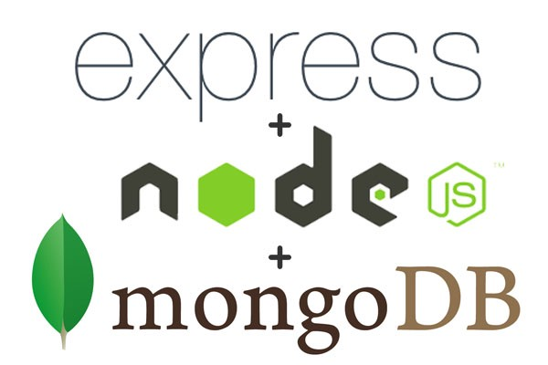

Gaurav Gireesh
Experienced in Agile and Waterfall Models of Software Development. Full Stack Developer aiming to revolutionize Web Development building robust, secure Software applications.
Experience
Software Developer
Global Connectivity Platform or Mobile Virtual Network Operator
Develop an MVNx Portal that provides useriInterface to MVNOs for invoking a set of APIs to enable them to access Provisioning data and Customer Service to the customers. It would be a portal where Customers can login and recharge or topup their Network device( USB Sticks ) with the Internet (3G/2G) Data. The process went through a Workflow process that included an approval with the managers or supervizing officers of the Employee/Customer.
- Develop back end services using Java Spring Boot framework to persist data into the database(MySQL) and expose these functionalities as RestFul APIs to be invoked by the Client-facing Front End Application
- Actively Designed and implemented a Proof of Concept (POC) to demonstrate the Client , the values of moving the single Monolithic Application into the MicroServices architecture which would make the Application Cloud Native and Cloud ready. The Applcation was deployed on HP owned MicroCloud HPE Helion -Stackato.
- As a Demonstration to the Client, showed how Logs can be streamed out of Applications on the cloud, How the overall Health of the Application's health can be monitored using a Product called APP DYNAMAICS. It also involved a demonstration of Auto Scaling of the application where new instances were automatically spawned for the application due to the rise of the number of incoming requests.
Vodafone Global Enterprise (VGE) and Single Access Partner Portal (SAPP)
Develop a Website for managing content for World's leading Telecom Company Vodafone and to design a Web Portal to manage various Buiseness Partners of the Company. The Business Partners should be able to login to the Portal and access Applications provisoned by Vodafone according to their Roles.
- Authored the design of the Flex Asset Model to hold the hierarchy of Various Contents of Vodaone- Articles, News and Insights, Images, Videos and so on.
- Design and Create the User Interface components - Website Header and Footer with Navigation links to the entire website. The Pages were supposed to display Breadcrumbs for moving within the site.
- Customize the Oracle WebCenter Sites tool's Out of the Box features- coded a Batch script that resolved unique id conflicts which sped up the Deployment processes of content and templates by a margin of 24%.
Central Provident Fund Board (CPFB, Singapore)
A Government undertaking which required a System/Portal which enables The Singapore premanent Residents to enroll into the Providents Fund plans to fund their retirements, healthcare and housing needs.
- Developed the Back End services (Business services) to persist Customers data on to the Database(Oracle).
- The operations included Create, Read, Update and Delete operations to be performed on Customer Data.
- Integrating with the Front End of this Application to call these back end services
Backend Engineer
- Building Backend Restful Web services for User Management using Python and Django Rest Framework for the startup Perfit.
- Functionalities included safe User registration, Login and authentication using JSON Web Token(JWT)
- Overriding default behavior of Django apps for User password reset and built in templates to suit the startup’s demands.
Education
University of Southern California
- Applied Natural Language Processing
- Artificial Intelligence
- Algorithms and Data Structures
- Web Technologies
- Database Systems
GPA: 3.58
Sri Siddhartha Institute of Technology, Bangalore, INDIA
GPA: 9.27 / 10.0
Academic Projects
Search Engine
- Search Engine is a web application designed using Angular 5 on front end with Express/Node app invoking Solr APIs to search on a Lucene index database of 14k web pages downloaded from Newsday website crawled by a crawler4j web crawler.
- This search engine has features of Auto-Suggest and Spelling Detection/Correction.
- The auto suggest feature allows users to select 5 best choices for their query keywords in Real time
Information Extraction
- Generate an Inverted index for 4000 digital books to facilitate a faster search through documents, enabling a better User experience while searching in the Search engine.
- Use Map Reduce jobs to generate the Inverted index on Google Dataproc cluster.
Android Application for Facebook Search
- Created an android application to invoke a web application in PHP to fetch information of Users, Groups, Events, Places and Pages on Facebook, using Facebook Graph APIs.
- The app was deployed on Google Cloud.
Identification and Expansion of Abbreviations and Shorthand text messages
- Led a team of 3 to develop a Natural Language Processing application that identifies various abbreviations and short-hands and then expands into their appropriate expansions ensuring context disambiguation.
Skills
-

-

-

- 
-


- Python- nltk (Natural Language Toolkit)
- Python- sklearn (Scikit learn)
- Python- pandas
Interests
Apart from being a Full-stack software developer/ Web programmer, I enjoy Music. I love the Classics - Boyzone, Backstreet Boys.
When forced indoors, I follow a number of comedy movies and television shows and I spend a large amount of my free time exploring the latest technolgy advancements in the Backend and Front end web development world.
Awards
- Best Performer (Practical) in Training program in HP.
- Second prize in ‘HACKNEX’, a competition on ‘Ethical Hacking and Information Security'.